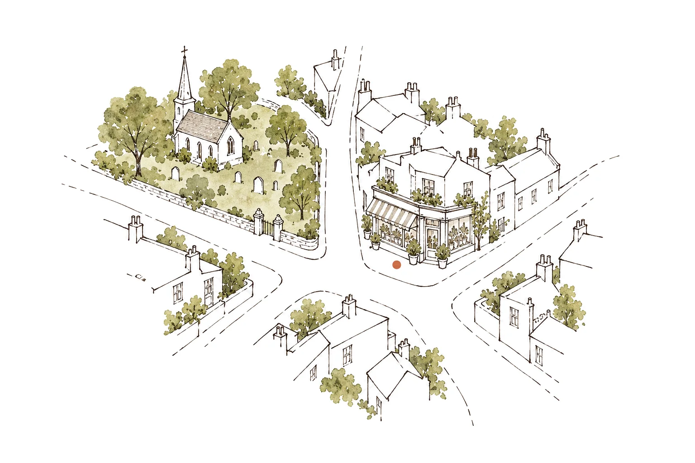

The seed drawers behind the counter
Thirty-eight varieties, weighed and packed by hand in the back room. Pull a drawer out and its packets come down to the counter.
Sowing now, in October: annuals, beans, peas, radishes, salads and sweet peas.
New this season
Ten new lines for autumn, packed and posted from the yard
Fill in a sowing note
What to sow this week
A note from the shop floor
October is when the shop smells of hessian and onions. The bulb sacks have come in from Lincolnshire, Dad is weighing garlic on the brass scales by the door, and the sweet pea seed we saved from the back yard is finally dry enough to pack.
If you sow only one thing this month, make it sweet peas: five seeds to a deep pot, in a cold frame or an unheated greenhouse, and pinch out the tips when they have three pairs of leaves. They sit quietly all winter and flower a month before anything sown in spring.
Come in and ask. We have been answering the same good questions since 1921.
Nell Pimpernel
Tanner’s Yard, October
Request the printed catalogue
Forty-eight pages, every variety we stock with sowing notes in plain words. Posted free in the first week of January.
Visit us
Open now until 5.30pm
3 Tanner’s YardAbbeystow, Somerset
Tanner’s Yard runs off the Market Place, opposite St Michael’s churchyard. Park in the old cattle market and walk up; it is two minutes, and the bicycle by the railings is ours.

Tanner’s Yard St Michael’s